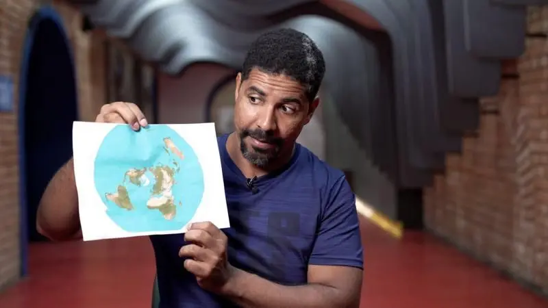
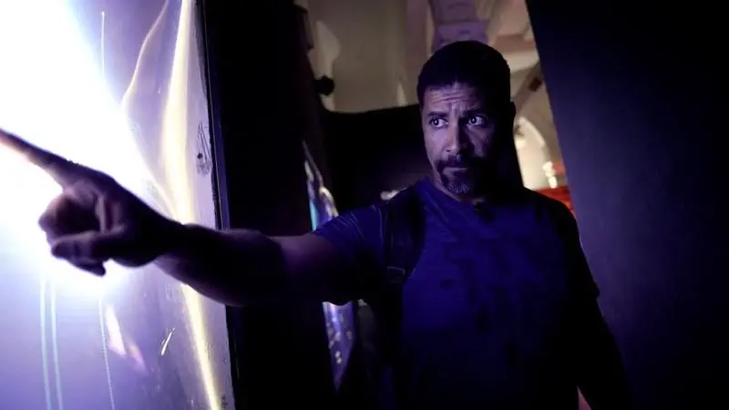

otras noticias
- Las imágenes falsas creadas con IA para intentar atraer el apoyo de los votantes negros hacia Trump
- La princesa Kate pide disculpas por la "confusión" que causó su foto retirada por las agencias de noticias por inconsistencias
- “Me arrepiento de haber publicado en línea que yo era Madeleine McCann”
- El Yimeilun, la estrategia con la que China busca influir en las elecciones de Taiwán al sembrar dudas sobre su alianza con EE.UU.
- Las afirmaciones falsas y engañosas amplificadas por Elon Musk en Twitter
- Donald Trump: cómo detectar imágenes creadas por inteligencia artificial como las fotos falsas del arresto del expresidente
- Los sobrevivientes de ataques terroristas que son acusados de fingir por teóricos de la conspiración
- Quiénes son los "Ciudadanos del Reich", el grupo asociado con los golpistas arrestados en Alemania
Cómo un viaje a Noruega me hizo ver que estaba equivocado y que la Tierra no es plana
En julio del año pasado, el YouTuber Leandro Batista, de 36 años, se embarcó en un viaje que, según él, confirmaría una creencia que promovía diligentemente en su canal y redes sociales, aunque estuviera contradiciendo el consenso científico: el terraplanismo.
Pero regresó de este viaje convencido de todo lo contrario y con el nuevo desafío de persuadir a sus seguidores de lo mismo.
Todo empezó cuando Leandro le pidió ayuda a sus seguidores en redes sociales para costear el viaje y se dirigió rumbo a Noruega en una autoproclamada misión de explorar el mundo “basado en un modelo de Tierra plana”.
No creía en investigaciones, fotografías o videos de que el planeta era más bien redondo y quería recopilar sus propias pruebas para demostrar lo contrario.
En Noruega, el YouTuber siguió un fenómeno conocido como Sol de Medianoche (más información adelante).
Pensó que este sería el comienzo de una fase decisiva en su campaña a favor de la Tierra plana, pero terminó siendo el fin de esa creencia para él.
Meses después de regresar, Leandro decidió que ya no podía continuar inmerso en esta teoría de la conspiración, luego de que en el viaje confirmara lo que los científicos venían diciendo desde hacía siglos.
"A finales de diciembre grabé un video en el canal y dije: muchachos, 'no hay manera de que la Tierra sea plana'", cuenta Batista a BBC News Brasil, durante una entrevista en el Museo Catavento, en São Paulo, que alberga una exposición permanente sobre el origen del Universo.
Leandro afirma que ahora está del lado de la gran mayoría de personas que reconocen que el planeta es redondo.
También dice que se ha convertido en una voz contra el terraplanismo, un movimiento pequeño pero ruidoso que, aunque en un principio pareciera inofensivo, puede tener fuertes efectos negativos según señalan algunos expertos.
En su nuevo rol, el YouTuber dice que tiene un desafío: intentar compensar en su canal, de 140 mil suscriptores, toda la difusión que hizo de una teoría sin ningún sustento científico.
“Durante estos seis años produje aproximadamente 3.000 videos defendiendo la teoría de la Tierra plana”, dice Leandro.
"Ahora quiero producir 3.000 para refutar punto por punto todo lo que dije antes y mostrar a la gente por qué la Tierra no es plana".
Dudando de la ciencia
Fue a principios de 2016 que el movimiento "terraplanista" (aquellos que piensan que la Tierra es plana) surgió en la vida de Leandro.
"Estaba fuera del trabajo y me encontré con un video sobre la teoría de la Tierra plana. Era tan extraño que me atrapó", dice.
"Decía que el gobierno miente, que la NASA miente y que vivimos en una Tierra plana. Y yo quería saber más".
Él, que estudió hasta la secundaria e incluso cursó luego un semestre de Química, comenzó a investigar en Internet y vio contenidos que circulaban desde hacía décadas en grupos negacionistas, aquellos que se niegan a creer en información científicamente comprobada.
En el caso de la Tierra plana, este negacionismo se basa en desafiar el consenso científico sobre la forma redonda del planeta.